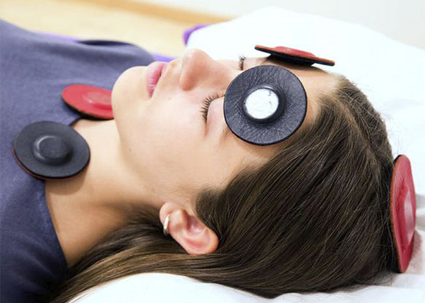

Conoce nuestras terapias complementarias
Terapia Floral: consiste en el uso de esencias de flores para promover el bienestar emocional y mental a modo de equilibrar el ánimo o emociones

Reiki: consiste en la transferencia de energía a través de las manos para promover la relajación, reducir el estrés y facilitar la curación

Biomagnetismo: consiste en el uso de imanes para equilibrar el pH del cuerpo y tratar diversas afecciones, promoviendo la salud y el bienestar.

Acupuntura: consiste en insertar agujas en puntos específicos del cuerpo para aliviar el dolor y tratar diversas condiciones de salud.